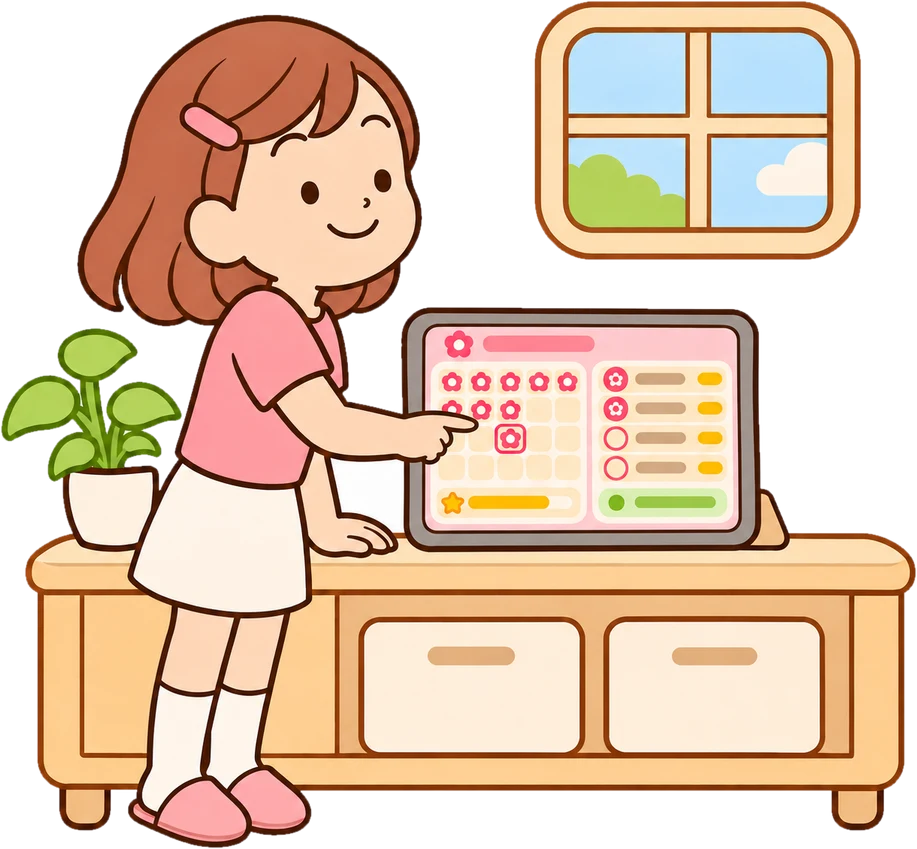
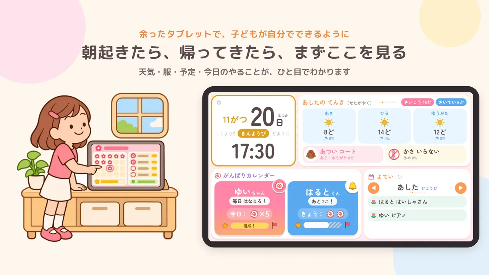
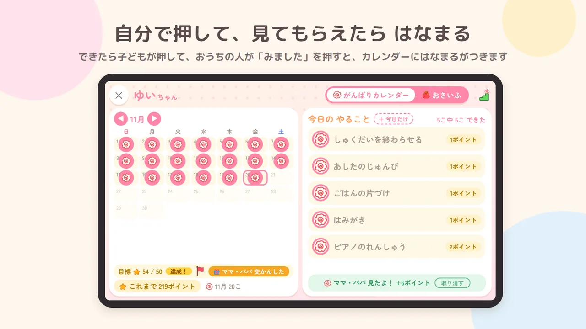
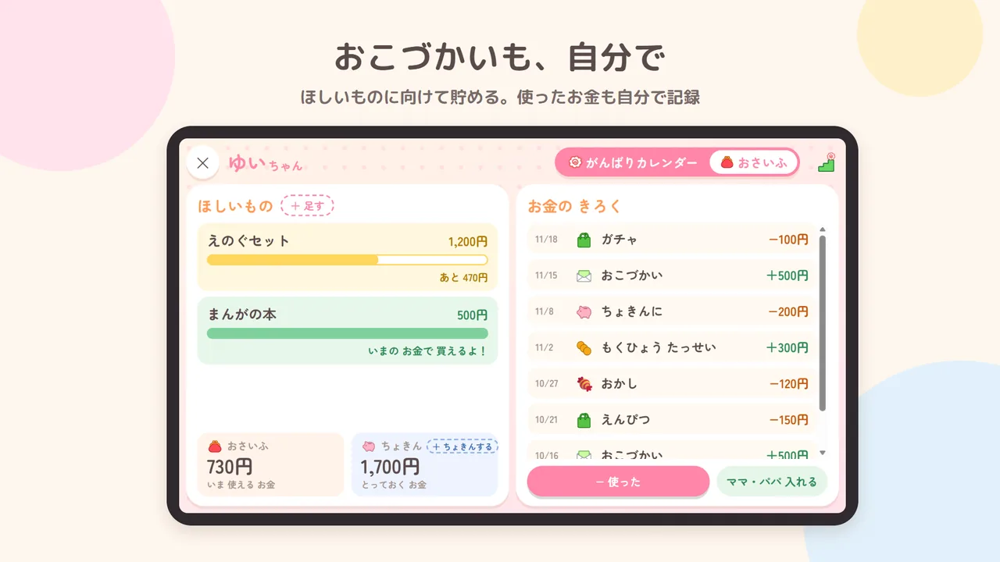
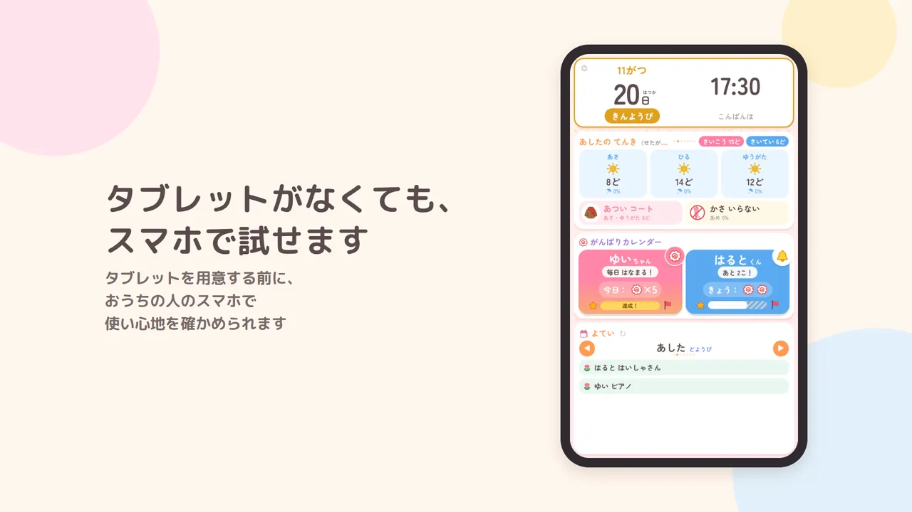
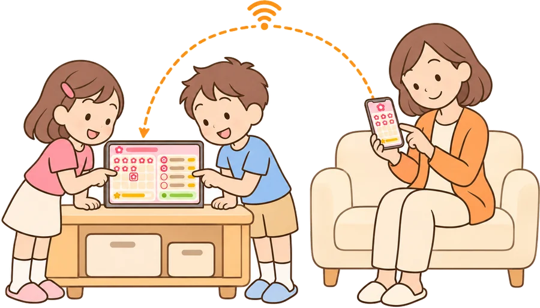

はなまるボード
今日がわかる。自分でできる。
Android アプリのテスト版、参加者を募集しています
子どもが毎朝見るボードのアプリです。余ったタブレットをリビングに置くと、家族みんなで見られます。時計・天気・予定と、子どもごとのやることを1つの画面に出します。子どもができたやることを自分で押して はなまるにし、おうちの人が「みました」を押すと、カレンダーにもはなまるがつきます。iPhone・iPad・PC の方は、ブラウザ版で試せます。

Android のタブレット・スマホ
Android アプリ（テスト版）おすすめ
いちばんおすすめの使い方です。Google Play で公開する前のテスト版なので、参加の手続きが少しあります（費用はかかりません）。
おうちの人のスマホからつないで「みました」を押す・毎日のお知らせ・Google カレンダーを選ぶだけで予定を出す・決まった時間に画面をつける、はアプリだけの機能です。新しい機能もアプリから入ります。
テスト版に参加する方法iPhone・iPad・PC
ブラウザ版
インストールせずに、まず見てみたい方へ。記録はその端末のブラウザと、お使いの Google ドライブ（つないだときだけ）に保存します。費用はかかりません。1台で使う形で、アプリだけの機能はありません。ドライブとのつながりは仕組み上1時間ほどで切れるため、設定を開いたときなどに Google の画面が一瞬出ます。
ブラウザではじめる記録を守るため、iPhone・iPad は「ホーム画面に追加」してください
Safari のまましばらく開かないと、記録が消えることがあります。ホーム画面に追加して、そこから開いてください。
- 上のボタンで開く
- 共有ボタン（四角から上向きの矢印）を押す
- 「ホーム画面に追加」→「追加」
データの安心
家族の記録は、おうちの端末の中だけにあります。運営者（はなまる工房）のサーバーやクラウドには、記録を1件も置いていません。
- アカウント登録はいりません。名前やメールアドレスを運営者に送ることはありません。
- アプリ・ブラウザ版とも、記録はその端末の中に保存します。運営者が見たり集めたりすることはできません。
- 2台で使うときも、家の Wi-Fi の中だけでつながります。つなぐときは番号で確かめます。
- ブラウザ版の Google ドライブへの控えは、あなた自身のドライブに置きます。はなまるボードが作ったファイルだけを扱い、ほかのファイルは見ません。運営者には届きません。
- 広告はありません。
画面




できること
- 朝の準備: 天気から「はんそで」「かさ いるよ」などを出し、着る服や持ち物を子どもが自分で考えるきっかけにします。
- がんばりカレンダー: お子さんごとに決めたやることを、できたら子どもが自分で押して はなまるにします。できた日はカレンダーにたまっていきます。
- おさいふ: 使いたいお子さんだけオンにできます。ほしいものに向けて、使ったお金やちょきんを自分で記録します。
- おうちの人のスマホから: 同じ Wi-Fi のスマホから、記録を見て「みました」を押せます。
- データは端末の中だけ: 記録や設定は外に送りません。広告もありません。
はじめ方で、使い方が変わります
Android のタブレット・スマホAndroid アプリではじめた場合

- リビングなどに置いて使います。記録は置いた端末の中にあります。
- おうちの人のスマホから、同じ Wi-Fi でつないで「みました」や設定ができます（Android はアプリ、iPhone は置いた端末の QR を読んでブラウザで）。
- 決まった時間に画面をつける・ボードを自動で開く・毎日のお知らせができます。
- 端末を替えるときは、設定の「おうちの人」→「データの書き出し・読み込み」で移せます。
iPhone・iPad・PCブラウザではじめた場合

- 1台で使います。記録はその端末のブラウザの中にあります。
- ほかの端末からは見られません。「みました」もその端末で押します。
- 画面は自分で開きます。お知らせ（通知）はありません。
- 端末を替えるときは、設定の「おうちの人」から Google ドライブに控えておくと、ほかの端末で戻せます（「データの書き出し・読み込み」でも移せます）。
iOS のアプリは検討中です。